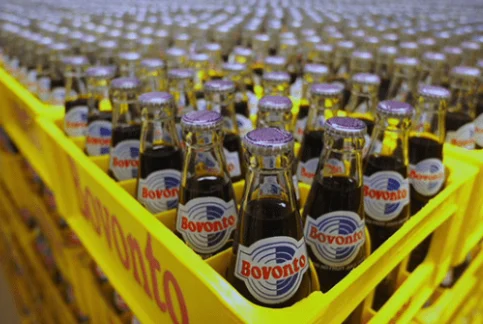

Crafting success, one professional at a time
Kalimark's journey to success is intricately woven with the skills and experiences of our exceptional team. We don't just hire employees; we invest in the architects of our triumph.
The heartbeat of innovation
Our stellar professionals
Step into the world of Kalimark, where innovation is not just a buzzword; it's a way of life. Our team of seasoned professionals forms the core of this creative powerhouse, bringing fresh ideas to the table and turning them into reality.